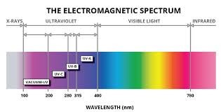
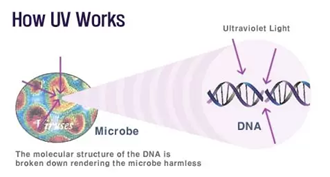

by Sarthak Sharma | on August 27, 2020 | at 6:05 pm
The Ultra Violet(UV) light spectrum is separated into mainly three sections UV-A, UV-B & UV-C. Out of which UV-C has the shortest wavelength which corresponds to a higher frequency radiation and a higher amount of energy. UV-C technology is used in lights or light emitting diodes (LEDs) to kill deadly germs and viruses. Now the question for our discussion: “Is UV-C safe?”. Prior to answering this question let’s discuss the utility and impact of UV-C.
UV-C radiation is entirely absorbed by our atmosphere. Hence, no natural UV-C radiation reaches the surface of the earth. These radiations can damage the DNA of the cells thus destroying their reproductive property. Because of this property, these radiations are available to us in the form of UV-C lights created with the purpose of destroying harmful viruses.
Research has found that UV-C degrades the DNA so severely, that microbes or viruses can’t multiply. “It doesn’t kill the virus — it renders it unable to reproduce,” says Jim Bolton, an environmental engineer at the University of Alberta. UV-C light can’t differentiate when it comes to ruining genetic material, and hence can damage human skin and eye cells. The effect of these radiations can be determined by its users in three ways –
A. Distance between the source of radiation and its user i.e. the farther the source from the human, the lesser dose he is exposed to.
B. The Amount of UV-C radiation penetrating inside the body, it can reach up to a short distance.
C. Time of Exposure i.e. prolonged exposure to these radiations can cause damage to eyes and skin.
So, one thing is very clear that UV-C light is one of the best sources to combat the fatal COVID19 and many other germs & viruses. But one thing that has to be kept in our minds is the way to use these devices for killing these viruses so that they can not cause any harm to the human body.
UV-C exposure can be reduced through product safety design considerations and controls. ZeroVir has coupled the UV-C technology with Smart Motion Sensors and IOT solutions to make it safe to use. There are operating instructions and recommendations for proper use of the UV-C lights to ensure zero human exposure.
ZeroVir UV-C Smart lights are inbuilt with Human detecting Motion Sensors which ensure that device will only work in the absence of humans.
As soon as these lights sense any human motion, they immediately stop so that there is no harm to humans. Also, ZeroVir UV-C lights do not cause any damage to surfaces so these are safe to use in kitchens, living rooms, meeting rooms, offices, restaurants, etc.
So, finally we conclude that though UV-C is a very good source to combat the fatal COVID-19 by following certain technological considerations so that there is no human exposure. ZeroVir UV-C lights are designed with ultimate precautions and thus are very safe to use and already endorsed by doctors as a preventive measure against Coronavirus.
Reference Links:
1. https://www.stouchlighting.com/blog/is-uv-light-safe-using-disinfection-lighting-safely
Categories:
Tags: Contact Less Sanitization UV C Technology
No responses yet
Leave a Reply
Your email address will not be published. Required fields are marked *